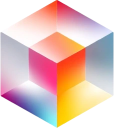
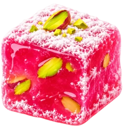
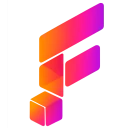
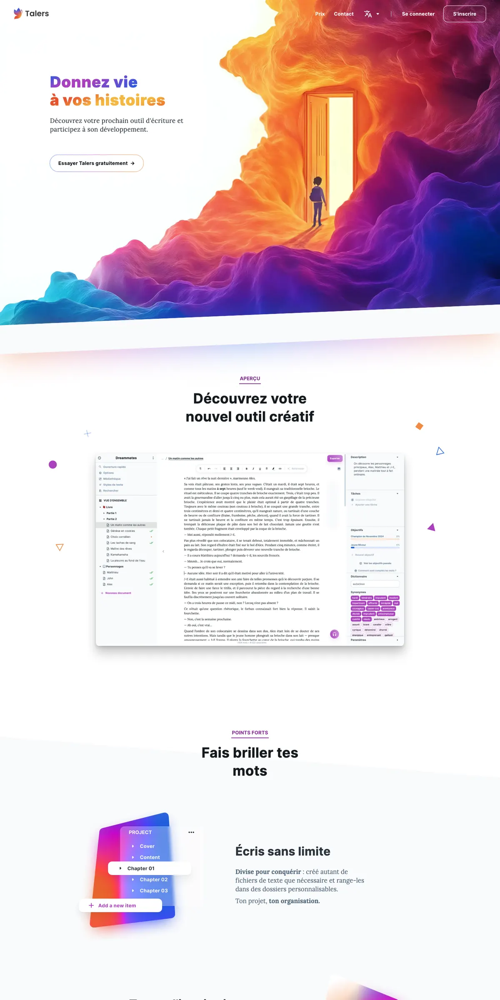
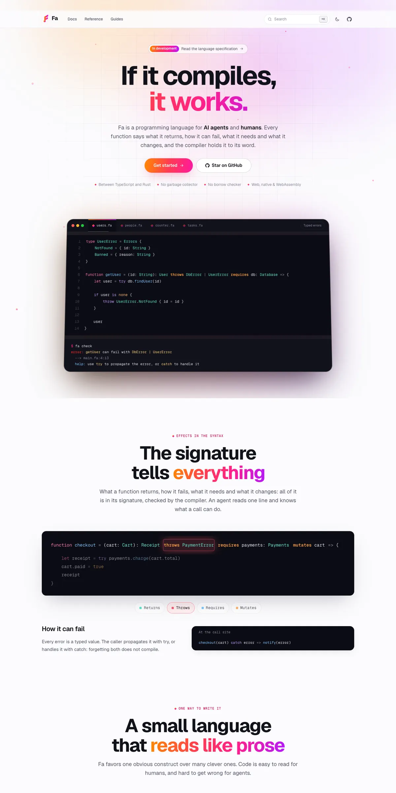
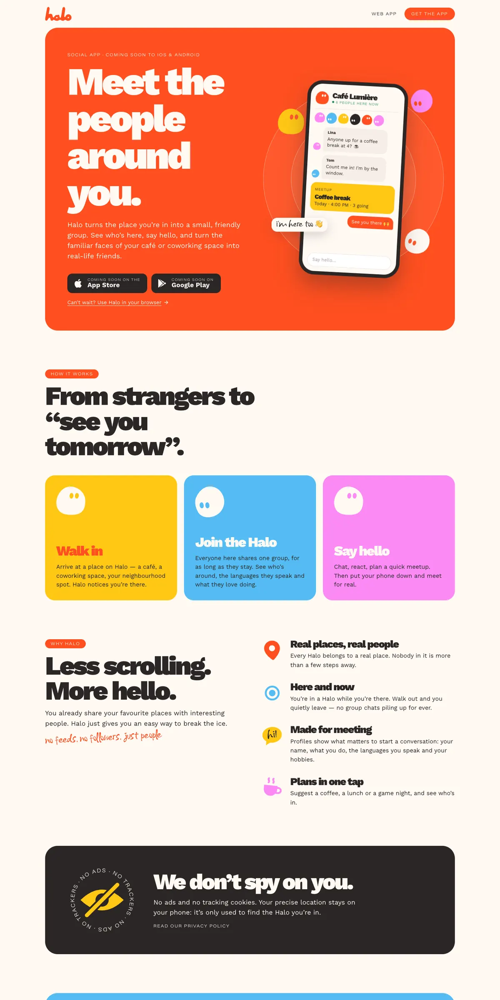
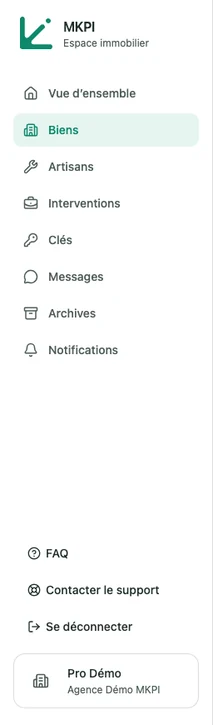
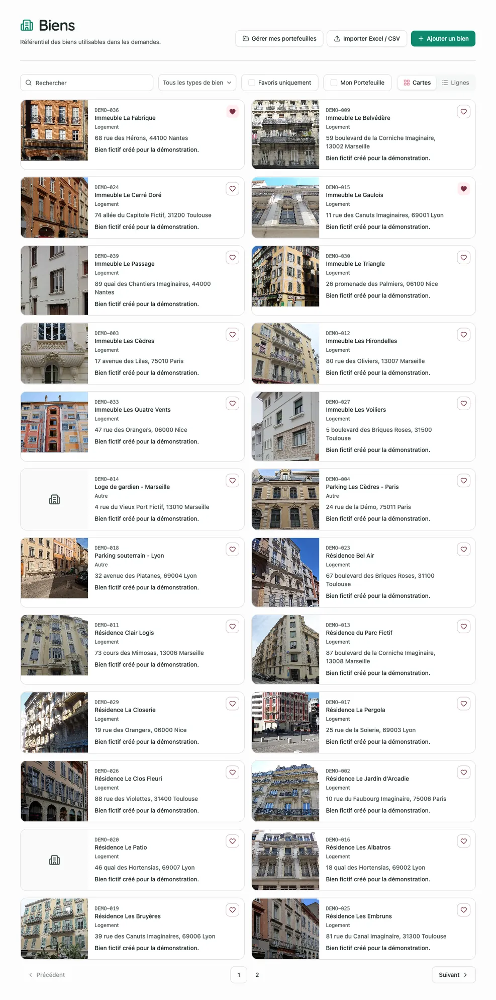
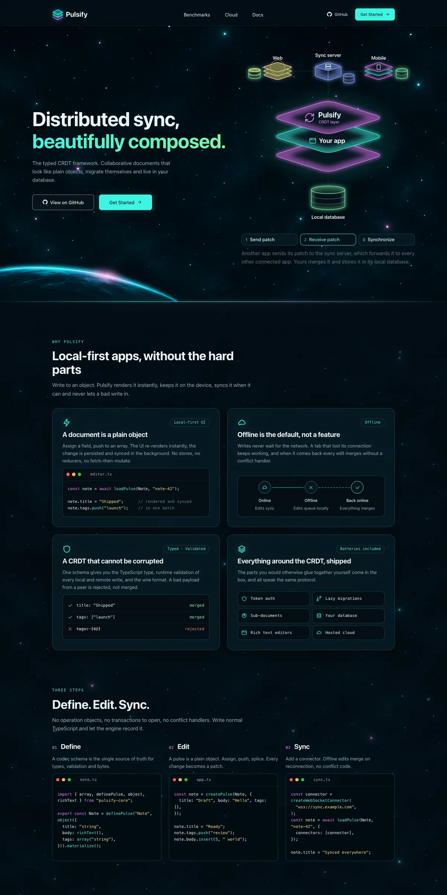
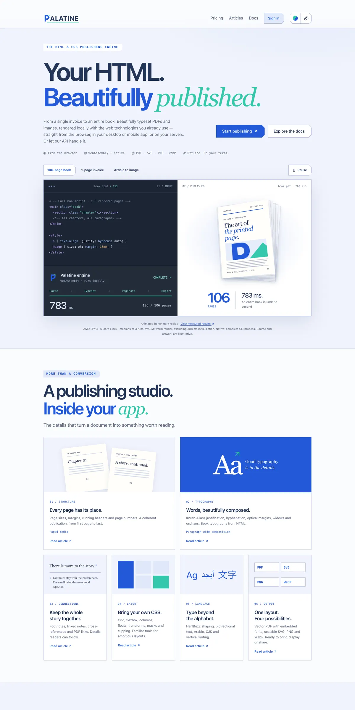

SaaS clé en main
De l'idée à la première facture : design, développement, authentification, paiement, hébergement. Vous arrivez avec un besoin, vous repartez avec un produit en ligne.


Digital LoukoumDigital Loukoum · studio de développement logiciel
Je suis Matthieu Gindre, ingénieur logiciel, architecte et designer. Je code depuis 11 ans et je conçois des SaaS, des apps et des outils rapides, élégants et faits pour durer.
01 Services
Du premier croquis à la mise en production, et bien après. Un seul interlocuteur, qui conçoit, code et livre.
De l'idée à la première facture : design, développement, authentification, paiement, hébergement. Vous arrivez avec un besoin, vous repartez avec un produit en ligne.
CRDT, synchronisation, mode hors-ligne. J'ai même écrit ma propre librairie de sync : Pulsify.
Trouver le goulot, le mesurer, le supprimer. Front, back ou base de données : ça doit filer.
Agents orchestrés, chatbots à mémoire, API et serveurs MCP pour brancher l'IA sur votre métier.
iOS, Android, macOS, Windows, Linux. Natif quand il le faut, multiplateforme quand c'est malin.
Analyse de bases de code, réduction de la dette technique, architectures qui tiennent la charge.
Auto-hébergement, edge, bases bien choisies : la même puissance pour une fraction de la facture.
Interfaces, identités visuelles, maquettes. Le pixel compte autant que l'octet.
Scripts, CLI, back-offices, automatisations : l'outil qui manque à votre équipe.
Parlons-en. Les problèmes inédits sont souvent les plus intéressants.
02 Langages
Trois langages, trois tempéraments. Dont un que j'ai dessiné moi-même.
avec Bun
import { serve } from "bun"
serve({
routes: {
"/idees": async requete => {
const idee = await requete.json()
return livrer(idee)
},
},
})Mon quotidien. Du front au back, typé de bout en bout, propulsé par Bun pour aller vite, en développement comme en production.
pour la vitesse
fn main() {
let produits: Vec<_> = idees()
.into_par_iter()
.filter(Idee::vaut_le_coup)
.map(construire)
.collect();
livrer(produits);
}Quand chaque milliseconde compte : parseurs, moteurs de synchronisation, outils en ligne de commande et WebAssembly.

mon propre langage
reactive count = 0
derived doubled = count * 2
watch {
console.log("{count} × 2 = {doubled}")
}
count += 1 -- logs "1 × 2 = 2"Un langage pensé pour les agents IA et les humains : 100 % type-safe, erreurs et effets typés, sûreté mémoire sans garbage collector.
Découvrir Fa sur fa-lang.dev03 Portfolio
Fondés, conçus ou construits de zéro. Survolez une capture pour faire défiler le site.

Fondateur & CTO · 2020 — 2025
L'application d'écriture des auteurs : éditeur collaboratif temps réel, assistance IA, export DOCX maison et correcteur en plus de 20 langues.
Construit de zéro, à la main, avant l'ère de l'IA
talers.io
Créateur · open source
Un langage de programmation pour les agents IA et les humains. « If it compiles, it works. » Compile vers JavaScript, natif et WebAssembly.
fa-lang.dev
Ingénieur full-stack · 2026
L'app sociale qui transforme le lieu où vous êtes en petit groupe convivial : géolocalisation, chat temps réel, réactions emoji.
haloapp.club

Ingénieur full-stack · 2026
La marketplace qui relie la gestion immobilière aux artisans du bâtiment. Web, iOS et Android développés de zéro, devis comparés par IA.
mkpi-solutions.com
Créateur · open source
Le framework CRDT typé : des documents collaboratifs qui ressemblent à de simples objets, migrent tout seuls et vivent dans votre base de données.
pulsify.cloud
Créateur
Le moteur de publication HTML & CSS : de la simple facture au livre entier, des PDF composés comme en imprimerie, dans le navigateur ou sur serveur.
palatine.page04 Parcours
Onze ans de code et quelques chemins de traverse, de mon premier poste à aujourd'hui. Faites défiler : le fil se déroule.
2019
Parce que les beaux algorithmes commencent souvent par de belles maths.
2015 — 2016
Premier poste : un logiciel pour agents immobiliers. J'y apprends à traquer les lenteurs et à remettre une infrastructure cloud sur pied.
2016 — 2017
Une carte pour que les motards se retrouvent et roulent ensemble. L'application web entière, de l'architecture à la carte, en six mois.
Escale · 2 mois
Je range le clavier et je pars travailler dans une ferme. Deux mois au grand air, où les seuls bugs ont des ailes.
Escale · 1 an
Un an à composer pour l'image, en amateur passionné. On y apprend le rythme, la structure et l'art de servir une histoire : comme en code.
2019 — 2020
Refonte d'une application vieillissante : architecture SPA, génération de PDF à grande échelle et migration vers Postgres.
2020 — 2022
Cap sur Nantes et la vie d'agence : six projets clients, des équipes à mener, du quiz livré en deux semaines à la landing page haut de gamme.
2020 — 2025
Je fonde mon application d'écriture pour les auteurs : collaboration temps réel, IA, réplication de base entre l'Europe et les États-Unis, correcteur en 20 langues.
2024
Refonte du front, stack modernisée, et un tableau virtualisé qui avale des milliers de lignes sans broncher.
2025
Six mois sur l'outil des conseillers en gestion de patrimoine : un nouveau module de contrats et une architecture assainie.
2025 — 2026
Un SaaS d'analyse SEO livré en trois semaines, puis enrichi d'un chat IA à mémoire et d'un serveur MCP.
2026
Une app mobile pour rencontrer les gens autour de soi : géolocalisation et chat temps réel avec réactions.
2026
Trois mois sur leur éditeur de livres, avec à la clé un parser DOCX quatre fois plus rapide que Pandoc.
2026
L'app qui relie l'immobilier aux artisans, construite de zéro sur web, iOS et Android. Devis comparés par IA, facturation Stripe.
Aujourd'hui
05 Contact
Un SaaS à lancer, une app à construire, une base de code à remettre d'aplomb ou un problème de performance qui résiste : écrivez-moi, je réponds vite.
Mon CV complet : Français (PDF) English (PDF)
0 dévorés